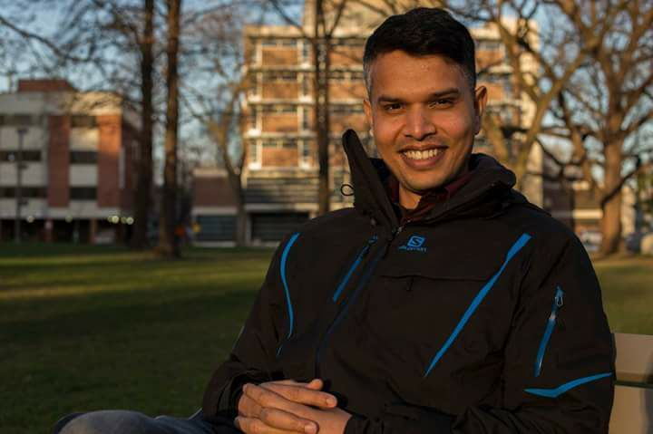

Founder & President
Firoze Alam was born in a small village in Pabna located in the northern part of Bangladesh. He was the 8th among his parents 11 children. Firoze completed his undergraduate degree in 2003 and started working as a high school Economics teacher at International Hope School of Bangladesh. Subsequently, he taught at prestigious English medium schools of Bangladesh like Scholastica and The Aga Khan School.
Although Firoze taught students with exceptional privileged socio-economic backgrounds at elite private schools of Bangladesh, he comes from a very humble background. His parents did not go to school, and he was the first in his family to attend university. Firoze was no stranger to poverty and marginalization. Firoze went to Bangla medium schools located in rural Bangladesh following the national curriculum, but he taught at elite private schools situated in Dhaka that followed a curriculum designed by Cambridge University. It gave him a unique understanding of how these two schooling systems marginalized the poor and privileged the rich. Firoze is a big believer in democratizing knowledge to create the level playing field for the poor. He wanted to give back to his community and other marginalized communities.
In 2007, he worked as director of education at The Dhaka Project that schooled 700 marginalized children. Firoze is one of the founding members of Pabna Association for General Education (PAGE) that was established in 2009 in his village to facilitate literacy for underprivileged children, and it is operating successfully to this day. In 2012, Firoze moved to Saudi Arabia to work at Bangladesh International School as a high school guidance counsellor. In 2013, Firoze founded WE Foundation in Gazipur.
Firoze earned his MA in Development Studies from the Independent University of Bangladesh, and Post Graduate Diploma in Education for the University of Cambridge. In 2014, Firoze moved to Canada for his graduate studies. He completed his MA in Social Justice and Equity Studies from Brock University. His graduate research focused on how English medium education in Bangladesh further privileges the rich and pushes the poor to the margin. Firoze has been an educator for the past 16 years. He taught at three different countries, trained teachers, built schools, and developed his unique literacy model for WE Foundation Bangladesh with his vision to democratize knowledge and reduce the education gap between rich and poor.